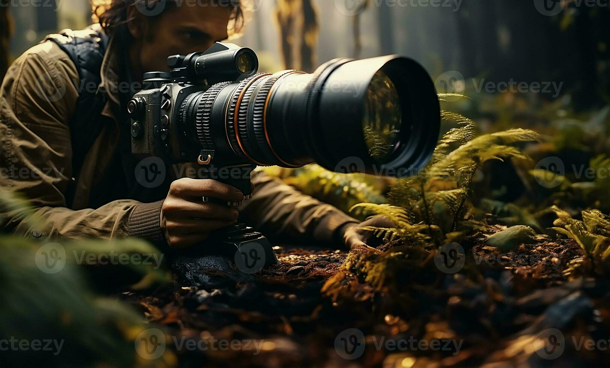

How do wildlife photographers ensure they don't disturb the animals they're photographing?
Wildlife photographers prioritize the welfare of the animals they photograph and adhere to ethical guidelines to minimize disturbance. They often use long lenses to maintain a safe distance and avoid approaching too closely. Additionally, they may observe animals from a concealed position or use remote-controlled cameras to capture images without causing stress to the subjects.